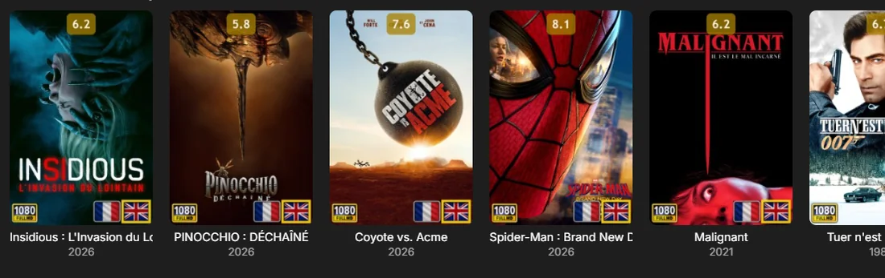
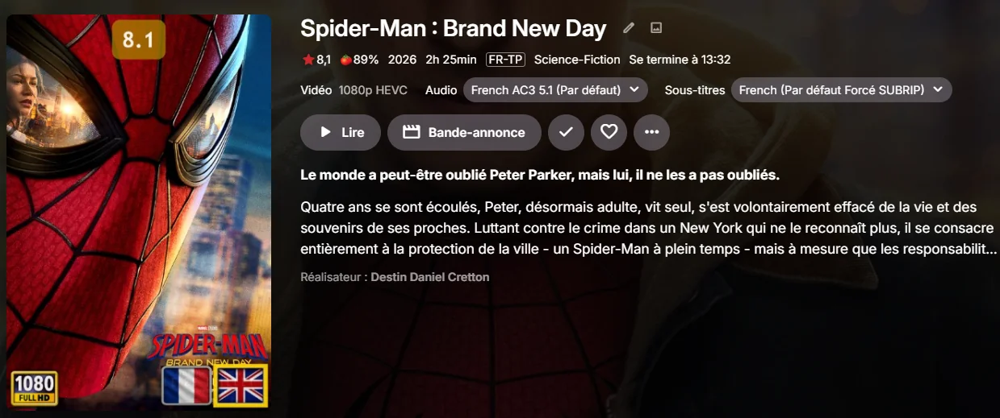
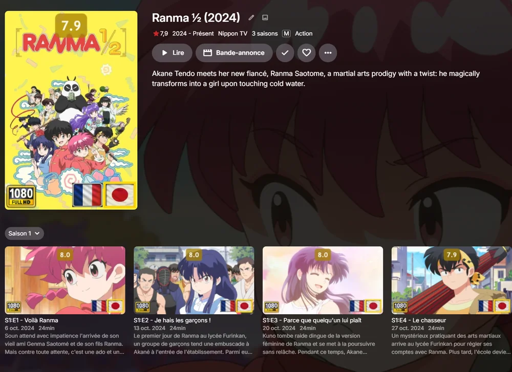
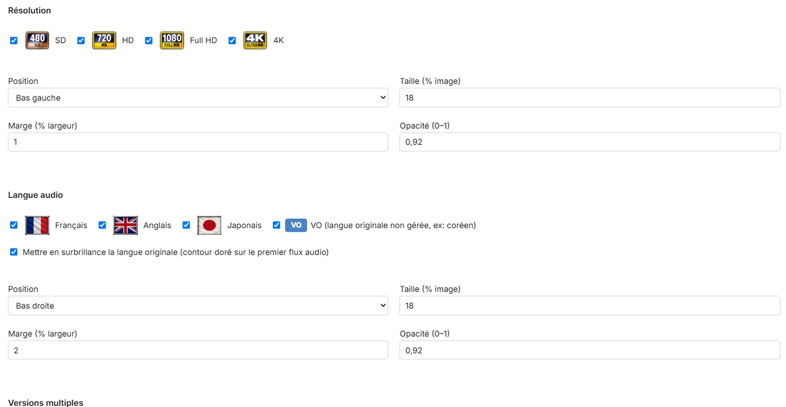

Vos affiches savent tout dire
Emby Badges colle sur chaque vignette de petits badges : résolution, langue audio, versions multiples, favoris, note. Un coup d'œil, et vous savez quoi lancer ce soir.

Quel film, quelle qualité, quelle langue ?
Le jeu de piste des versions
Doublé ou pas doublé
Une bibliothèque qui déborde
Tout est écrit sur l'affiche
4K · 1080p · HD · SD
Résolution
FR · EN · JP · VO
Langue audio
MULTI
Versions multiples
♥
Favoris
8 positions
Tout se règle
Films : tout est sur l'affiche

Séries : pareil, en cumulé


Quoi de neuf dans la 1.2.0
La note, en un badge
Séries et saisons aussi
Vignettes paysage badgées
Sous le capot
Votre média
→
Extraction
→
Rendu
→
Emby
Installer
Depuis les releases
Configuration
Depuis les sources
git clone https://github.com/CCoupel/Emby_Badges.git cd Emby_Badges python gen_config_page.py dotnet build src/EmbyBadges/EmbyBadges.csproj --configuration Release --output dist/ # copier dist/EmbyBadges.dll dans plugins/ (racine) puis redémarrer Emby